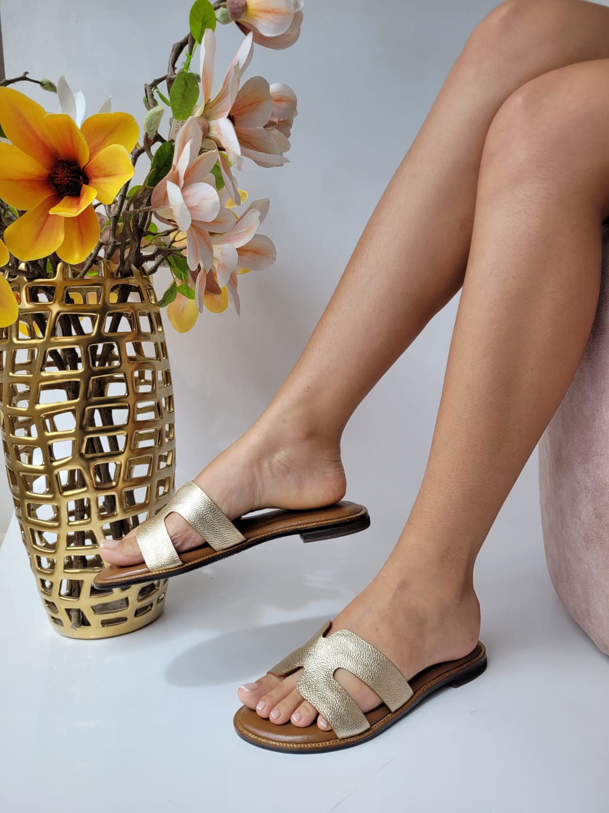
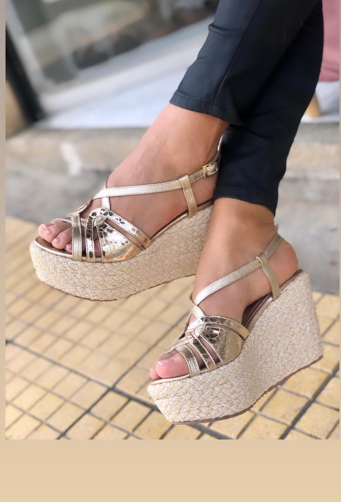
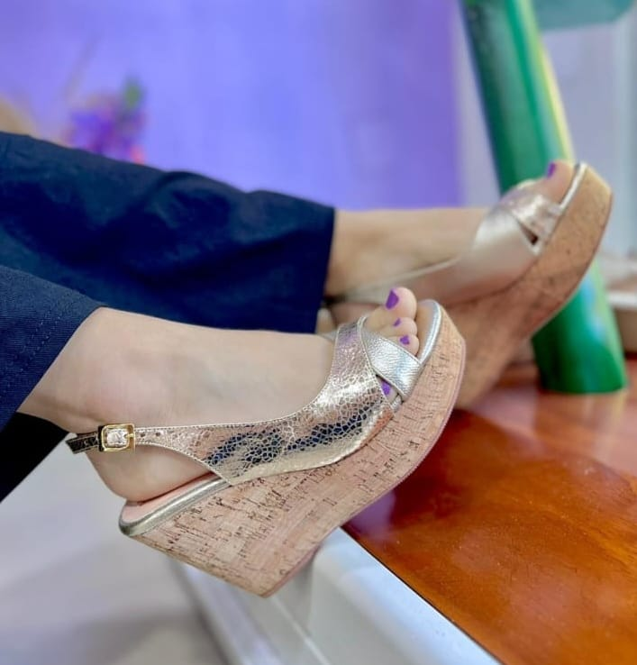
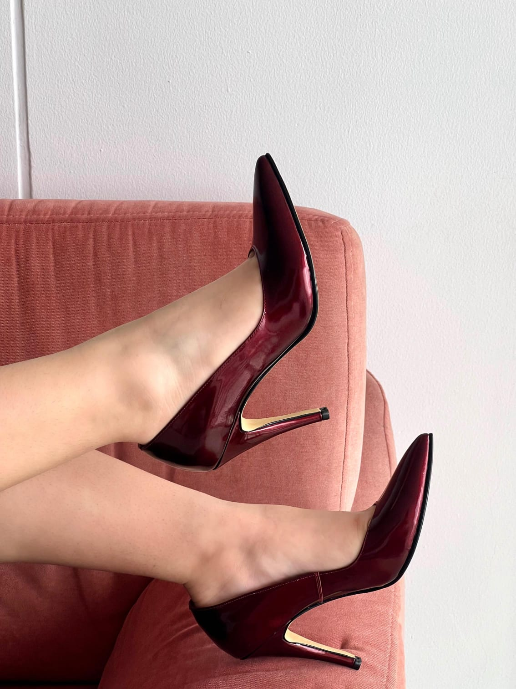

Altura 1/2
Capellada cuero
Forro badana
Suela spanso

Altura 7/2
Suela neolíte
Capelladas cuero

Altura 5/2
Planta PU
forro yute trenzado
Capelladas cuero y folia

Altura 6/2
Capellada cuero y folia
Forro badana
Planta PU
Forro corcho taponado

Stileto 8/2
Capellada cuero charolt
Forro badana